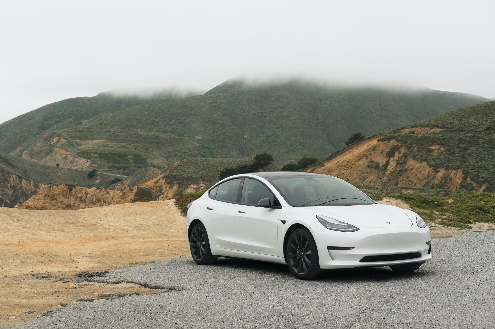

전기자동차(electric vehiecle)는 전기 공급원으로부터 충전받은 전기에너지를 동력원(動力源)으로 사용하는 자동차로 하이브리드자동차, 수소차 등과 함께 "환경친화적 자동차" 중 하나로 정의되어 있다.
이 글에서는 전기로 구동하여 도로를 주행하는 승용차에 대해 서술한다. 디젤 엔진과 가솔린 엔진 등의 내연기관을 장착한 자동차나 전동기와 내연기관을 같이 장착한 하이브리드 자동차와는 다르게 순수히 전기만 사용하여 구동하는 자동차를 의미한다.
기존 내연기관으로 작동하는 일반적인 자동차와는 달리 전기를 이용해 구동력을 얻으므로 매연을 배출하지 않는다는 장점이 있어서 화석연료(석탄, 석유 등)로 인한 이산화탄소 증가가 지구온난화의 원인으로 밝혀진 이래 각국에서는 이산화탄소 배출을 줄이기 위해 적극적으로 개발 및 개량을 하고 있다.
아직도 여러모로 단점들이 있지만 세계 유수의 자동차 업체들이 치열하게 경쟁 및 개발하고 있어 빠르게 극복되고 있다.